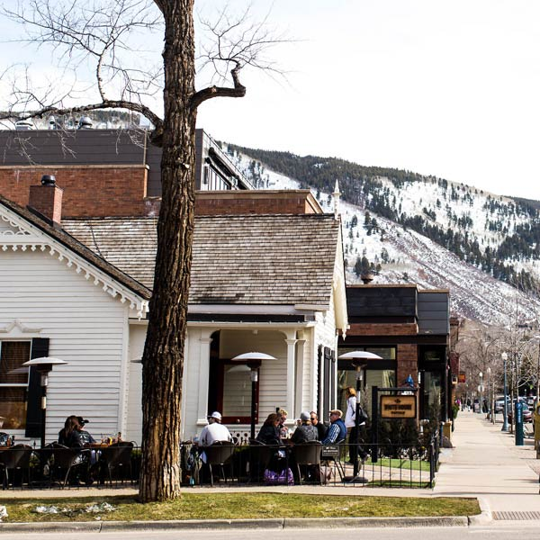

Restaurants
Whether you are looking for breakfast, lunch, dinner, après ski, or a coffee shop, Aspen's growing restaurant scene has everything you're hungry for.
Mawa's Kitchen Aspen
The food you will find at Mawa’s Kitchen is mostly Mediterranean with French and African heritage for Dinner as well as American Classics for breakfast and lunch.
White House Tavern
The White House Tavern offers premium, lively and convivial atmosphere featuring an exhibition kitchen and interesting artworks set in a warm, wood paneled space.
Matsuhisa
Here you'll find slices of salmon and fatty tuna that defy reason, delivering fresh ocean flavors in the middle of the mountains.